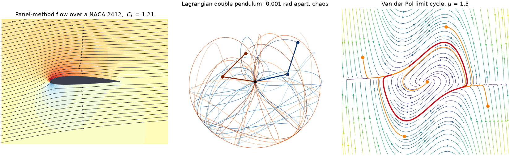

engineeringkit#
engineeringkit makes the models behind 12 engineering domains computable, inspectable and visualizable. Choose a domain to find its foundational ideas, runnable examples and full API in one place. NumPy and SciPy provide mature numerical solvers; EngineeringKit exposes engineering equations, SI conventions and intermediate results for learning and teaching.


Browse by domain#
Structures and Machines
Elasticity, beams, columns, stress transformations and planar trusses.
Rigid-body motion, gears, mechanisms and inspectable vibration histories.
Energy and Flow
Ideal gases, heat/work accounting, ideal cycles and exergy.
Fluid statics, pipe flows, similarity, flow measurement and pumps.
Conduction, convection, radiation, fins and heat exchangers.
Airfoil and wing baselines, drag polars and compressible flow.
Circuits, Signals and Control
DC and AC circuits, transients, RLC resonance and electrical power.
Classical stability, PID responses, state feedback, LQR and estimation.
Sampling, Fourier transforms, spectra, filtering and quantization.
Modulation, noise, channel capacity, detection and link budgets.
Materials and Reliability
Elastic constants, yielding, fracture, fatigue, creep and composites.
Lifetime distributions, independent systems, availability and maintenance.
Start here#
Installation and quickstart explains installation and basic use, and the quickstart notebook runs in Colab or in JupyterLite. Four tutorials follow one problem across several domains: A beam from load to fatigue life, A feedback loop in the time and frequency domains, A power plant from cycle to cooling tower and A radio link from antenna to bit errors. Each domain also has a set of exercises with worked solutions. The domain guides describe units, sign conventions and model assumptions; Numerical validation policy records the benchmark policy, and Scope and remaining limitations identifies remaining scope limits. Version 0.1.0 includes all twelve domains and enforces 100% production statement coverage. That metric does not prove scientific correctness or model applicability.
from engineeringkit.structural_engineering import SimplySupportedBeam
beam = SimplySupportedBeam(5, 200e9, 8e-6)
result = beam.solve_point_load(10000)
print(result.summary())
fig, axes = result.plot()